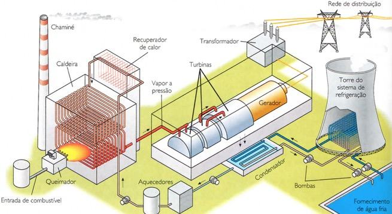

A energia térmica funciona como resultado do movimento de partículas em um determinado corpo que geram calor. O processo de transmissão de calor pode ser feito de tais formas: radiação, condução ou convecção.

Biomassa: Baixo custo do combustível e da construção e Baixa emissão
de gases do efeito estufa
Carvão: Alta produtividade e Baixo custo do combustível e
da construção
Gás Natural: Menor poluição local, em comparação com a de carvão e
Baixo custo da construção
Termonuclear: Praticamente não existe emissão de gases do efeito estufa e
Alta produtividade
Biomassa: Possibilidade de desmatamento (cultivo das plantas que dão
origem a biomassa) e disputas de espaço no solo relacionadas à produção de alimentos
Carvão: É a termelétrica que mais emite gases do efeito estufa e
a poluição causa problemas respiratórios
Gás Natural: Emissão alta de gases do efeito estufa e variação
grande do custo do combustível (Petróleo)
Termonuclear: Custo muito alto, alta produção de lixo radioativo e as
consequências de acidentes geralmente são muito graves